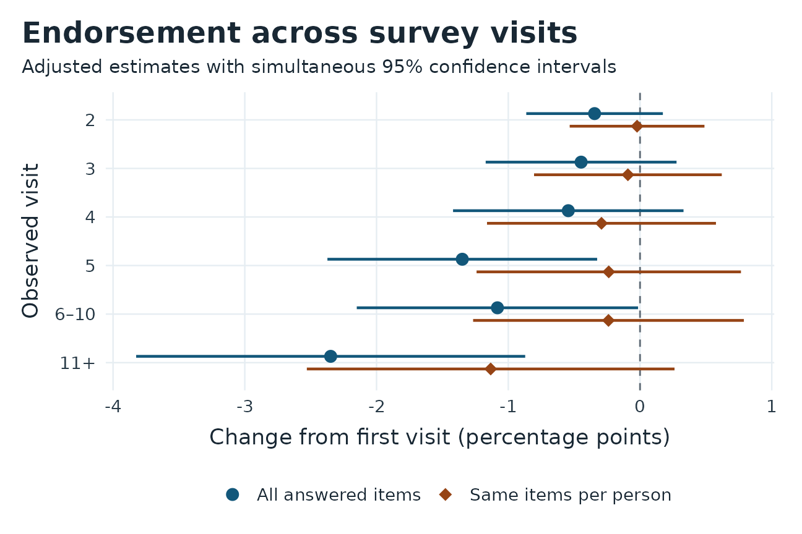

A daily study of the self
Do repeat survey participants say Yes to fewer signifiers?

The share of Yes answers fell modestly at later visits when the analysis accounted for how often each signifier was endorsed across respondents. The decline was smaller and less clear when the analysis compared the very same signifiers within each person. That distinction matters for Ipseity Daily. A person can say Yes less often because their answers changed, because the questions changed, or because both happened.
What counts as a visit?
Ipseity Daily asks American adults whether particular words or phrases, called signifiers, describe them today. Each completed answer contributes a Yes or a No. The share endorsed on a visit is the number of Yes answers divided by the number of signifiers the person answered that day. An item without a completed answer stays out of the denominator.
The snapshot spans July 8, 2025, through November 27, 2026. It contains 805,937 answers from 5,528 respondents on 10,323 respondent-days. To study change within people, I used the 1,719 respondents with answers on multiple dates. They contributed 507,867 answers across 6,514 respondent-days. I numbered each person's observed visits by date, starting with their earliest recorded visit. The median gap between the first and second visits was 39 days. Participation could be more frequent for some respondents and more spread out for others.
Making the visits comparable
The main analysis compared each respondent's visits with their first recorded visit. The model allowed each person to have a different baseline tendency to answer Yes, each signifier to have a different baseline rate of endorsement, and each survey date to have a different overall Yes rate. The date adjustment accounts for shifts common to people surveyed on a given day. Each respondent-day received equal total weight, so answering more questions on a visit gave that visit no extra weight. Answers were eligible regardless of whether demographic information was available.
A second model used only signifiers that the same person answered on multiple dates. This comparison can account for a particular signifier being a better fit for one person than for another. It retained 307,073 answers covering the same 6,514 visits and 1,719 respondents, and kept the original answer weights and survey-date adjustment. Both models took into account that answers from the same person are related. The chart's 95% confidence intervals were adjusted together across all displayed comparisons to account for looking at several visit groups.
A small decline that depends on the comparison
On their first visit, repeat respondents said Yes to 35.12% of the signifiers they answered, averaging each person's share equally. After adjustment, the estimated change at the second visit was −0.34 percentage points, with a confidence interval from −0.86 to +0.17 points. The third- and fourth-visit intervals also included zero.
The later estimates in the all-answer model were further below the first visit. At visit five, the difference was −1.35 percentage points, with an interval from −2.37 to −0.33. Visits six through ten showed a decline of 1.08 points, with an interval from −2.15 to −0.01. For visit eleven onward, the estimated difference was −2.35 points, with an interval from −3.82 to −0.87. Only 69 respondents reached that last group, so it reflects the experience of a relatively small set of frequent participants.
The figure marks the all-answer estimates with circles and the same-item estimates with diamonds. The dashed line marks zero change. The diamonds sit closer to zero at every visit group, and their intervals all reach across the line. The estimate for visit eleven onward was −1.13 points when tracking the same items, with an interval from −2.53 to +0.26. That range allows for a modest decline as well as little change.
What the comparisons can tell us
The all-answer model adjusts for which signifiers were answered using each item's average tendency to elicit a Yes. A set of signifiers can still be a particularly good fit for an individual. The same-item comparison addresses that possibility directly, using only items that recur for that person. It also leaves out items answered on just one visit. The difference between the results could reflect how the models handle personal fit, which items contribute to each estimate, or both.
Later visit groups represent people who returned often enough to reach them before the snapshot ended. That can make those groups different from people who returned once or joined near the end of the observation period. Even within the same person, the mix of completed answers could change through skipped items as well as changes in which items were presented.
Familiarity with the survey and changes in people's circumstances could affect how people answer. The analysis measures the association with visit number, and those explanations remain open. The findings apply to the repeat participants studied here, with limited grounds for generalizing to U.S. adults.
Read the complete R analysis
#!/usr/bin/env Rscript
suppressPackageStartupMessages({
library(tidyverse)
library(Matrix)
})
schema <- c(
"endorsed", "signifier", "observation_date", "hashed_respondent_id",
"demographics_status", "age", "sex", "ethnicity", "birth_country",
"residence_country", "nationality", "language", "student", "employment",
"time_on_task", "approvals"
)
demographics <- c(
"age", "sex", "ethnicity", "birth_country", "residence_country",
"nationality", "language", "student", "employment"
)
data_path <- Sys.getenv("IPSEITY_DATA_PATH", "data/ipseity.csv.gz")
snapshot <- suppressWarnings(read_csv(
data_path,
col_types = cols(
.default = col_character(),
endorsed = col_integer(),
observation_date = col_date(format = "%Y-%m-%d"),
age = col_double()
),
show_col_types = FALSE,
progress = FALSE
))
stopifnot(
identical(names(snapshot), schema),
nrow(problems(snapshot)) == 0L,
nrow(snapshot) == 805937L,
all(snapshot$endorsed %in% c(0L, 1L)),
all(!is.na(snapshot$observation_date)),
max(snapshot$observation_date) == as.Date("2026-11-27"),
all(!is.na(snapshot$signifier) & nzchar(snapshot$signifier)),
all(!is.na(snapshot$hashed_respondent_id) &
str_detect(snapshot$hashed_respondent_id, "^[[:xdigit:]]{12}$")),
all(snapshot$demographics_status %in% c("available", "consent_revoked", "data_expired")),
all(is.na(snapshot[snapshot$demographics_status == "consent_revoked", demographics])),
anyDuplicated(select(snapshot, hashed_respondent_id, observation_date, signifier)) == 0L
)
visit_levels <- c("1", "2", "3", "4", "5", "6–10", "11+")
visits <- snapshot |>
count(hashed_respondent_id, observation_date, name = "answers") |>
group_by(hashed_respondent_id) |>
arrange(observation_date, .by_group = TRUE) |>
mutate(
visit = row_number(),
total_visits = n(),
visit_group = case_when(
visit <= 5L ~ as.character(visit),
visit <= 10L ~ "6–10",
TRUE ~ "11+"
),
visit_group = factor(visit_group, levels = visit_levels)
) |>
ungroup()
repeat_visits <- filter(visits, total_visits >= 2L)
answers <- snapshot |>
select(hashed_respondent_id, observation_date, signifier, endorsed) |>
inner_join(
select(repeat_visits, hashed_respondent_id, observation_date, visit_group, answers),
by = c("hashed_respondent_id", "observation_date")
) |>
mutate(
weight = 1 / answers,
calendar_day = factor(observation_date)
)
# In this check, each retained answer has another observation of the same
# signifier from the same respondent. Retain the original respondent-day weights.
matched_answers <- answers |>
group_by(hashed_respondent_id, signifier) |>
filter(n() > 1L) |>
mutate(pair = cur_group_id()) |>
ungroup()
group_coverage <- function(rows) {
rows |>
group_by(visit_group) |>
summarise(
observations = n(),
respondent_days = n_distinct(hashed_respondent_id, observation_date),
respondents = n_distinct(hashed_respondent_id),
.groups = "drop"
)
}
all_coverage <- group_coverage(answers)
matched_coverage <- group_coverage(matched_answers)
stopifnot(
identical(as.character(all_coverage$visit_group), visit_levels),
identical(as.character(matched_coverage$visit_group), visit_levels),
all(all_coverage$observations >= 50L & all_coverage$respondents >= 20L),
all(matched_coverage$observations >= 50L & matched_coverage$respondents >= 20L)
)
# Weighted linear probability models put visit coefficients on the proportion
# scale. The first visit is the reference. Calendar-day effects are included
# in both fits. The matched fit absorbs respondent-by-signifier effects.
fit_visit_model <- function(rows, match_signifiers = FALSE) {
response <- rows$endorsed
if (match_signifiers) {
design <- sparse.model.matrix(~ visit_group + calendar_day, data = rows)[, -1L]
average_by_pair <- sparseMatrix(
i = rows$pair, j = seq_len(nrow(rows)), x = rows$weight
)
average_by_pair <- Diagonal(x = 1 / Matrix::rowSums(average_by_pair)) %*%
average_by_pair
design <- design - (average_by_pair %*% design)[rows$pair, , drop = FALSE]
response <- response - as.numeric(average_by_pair %*% response)[rows$pair]
} else {
design <- sparse.model.matrix(
~ visit_group + calendar_day + factor(hashed_respondent_id) + factor(signifier),
data = rows
)
}
root_weight <- sqrt(rows$weight)
weighted_design <- Diagonal(x = root_weight) %*% design
weighted_response <- root_weight * response
normal_matrix <- Matrix::crossprod(weighted_design)
decomposition <- Cholesky(normal_matrix, LDL = FALSE)
coefficients <- solve(
decomposition, Matrix::crossprod(weighted_design, weighted_response)
)
# Calculate the respondent-clustered covariance for the visit coefficients.
# Selected columns of the inverse normal matrix map the weighted regression
# residuals to the influence on each visit contrast.
visit_columns <- which(startsWith(colnames(design), "visit_group"))
contrasts <- sparseMatrix(
i = visit_columns, j = seq_along(visit_columns), x = 1,
dims = c(ncol(design), length(visit_columns))
)
influence <- as.matrix(weighted_design %*% solve(decomposition, contrasts))
residuals <- weighted_response - as.numeric(weighted_design %*% coefficients)
cluster_scores <- rowsum(influence * residuals, rows$hashed_respondent_id)
clusters <- nrow(cluster_scores)
covariance <- crossprod(cluster_scores) * clusters / (clusters - 1L)
estimates <- as.numeric(coefficients[visit_columns, ])
list(
estimates = tibble(
visit_group = factor(visit_levels[-1L], levels = visit_levels),
estimate = estimates,
std_error = sqrt(diag(covariance)),
clusters = clusters
),
covariance = covariance
)
}
primary <- fit_visit_model(answers)
matched <- fit_visit_model(matched_answers, match_signifiers = TRUE)
# Use a Bonferroni adjustment across every displayed contrast in both fits.
intervals <- bind_rows(
"All answered items" = primary$estimates,
"Same items per person" = matched$estimates,
.id = "analysis"
) |>
mutate(
critical_value = qt(1 - 0.05 / (2 * n()), df = clusters - 1L),
lower = estimate - critical_value * std_error,
upper = estimate + critical_value * std_error
)
primary_coefficients <- primary$estimates$estimate
test_df <- length(primary_coefficients)
cluster_df <- primary$estimates$clusters[[1L]] - 1L
wald_f <- drop(crossprod(
primary_coefficients, solve(primary$covariance, primary_coefficients)
)) / test_df
wald_p <- pf(wald_f, test_df, cluster_df, lower.tail = FALSE)
first_two_visits <- repeat_visits |>
filter(visit <= 2L) |>
group_by(hashed_respondent_id) |>
summarise(gap = as.numeric(max(observation_date) - min(observation_date)), .groups = "drop")
raw_by_visit <- answers |>
group_by(visit_group) |>
summarise(raw_share = weighted.mean(endorsed, weight), .groups = "drop")
matched_respondent_days <- n_distinct(
matched_answers$hashed_respondent_id, matched_answers$observation_date
)
results <- c(
sprintf("Snapshot date range: %s through %s",
min(snapshot$observation_date), max(snapshot$observation_date)),
sprintf("Snapshot response observations: %d", nrow(snapshot)),
sprintf("Snapshot respondent-days: %d", nrow(visits)),
sprintf("Snapshot respondents: %d", n_distinct(visits$hashed_respondent_id)),
sprintf("Snapshot signifiers: %d", n_distinct(snapshot$signifier)),
sprintf("Snapshot observation dates: %d", n_distinct(visits$observation_date)),
sprintf("Repeat analysis response observations: %d", nrow(answers)),
sprintf("Repeat analysis respondent-days: %d", nrow(repeat_visits)),
sprintf("Repeat analysis respondents: %d", n_distinct(repeat_visits$hashed_respondent_id)),
sprintf("Matched analysis response observations: %d", nrow(matched_answers)),
sprintf("Matched analysis respondent-days: %d", matched_respondent_days),
sprintf("Matched analysis respondents: %d", n_distinct(matched_answers$hashed_respondent_id)),
sprintf("Median elapsed days between first and second visits: %g", median(first_two_visits$gap)),
sprintf("Simultaneous confidence level: 95%% across %d displayed contrasts", nrow(intervals)),
sprintf("Primary joint test of visit group: F(%d, %d) = %.3f; p = %.6g",
test_df, cluster_df, wald_f, wald_p),
"",
"Primary coverage by observed visit group and raw equal-visit Yes proportion",
"Visit group | Response observations | Respondent-days | Respondents | Yes percent",
with(left_join(all_coverage, raw_by_visit, by = "visit_group"),
sprintf("%s | %d | %d | %d | %.2f",
visit_group, observations, respondent_days, respondents, 100 * raw_share)),
"",
"Matched coverage by observed visit group",
"Visit group | Response observations | Respondent-days | Respondents",
with(matched_coverage,
sprintf("%s | %d | %d | %d", visit_group, observations, respondent_days, respondents)),
"",
"Adjusted differences from the first observed visit in percentage points",
"Analysis | Visit group | Estimate | Simultaneous 95% lower | Simultaneous 95% upper",
with(intervals,
sprintf("%s | %s | %+.2f | %+.2f | %+.2f",
analysis, visit_group, 100 * estimate, 100 * lower, 100 * upper))
)
writeLines(enc2utf8(results), "results.txt", useBytes = TRUE)
plot_data <- intervals |>
mutate(
row = length(visit_levels) - as.integer(visit_group) + 1L,
row = row + if_else(analysis == "All answered items", 0.13, -0.13)
)
figure <- ggplot(plot_data, aes(colour = analysis)) +
geom_vline(xintercept = 0, colour = "#636E79", linewidth = 0.55, linetype = "dashed") +
geom_segment(
aes(x = 100 * lower, xend = 100 * upper, y = row, yend = row),
linewidth = 0.85, show.legend = FALSE
) +
geom_point(aes(x = 100 * estimate, y = row, shape = analysis), size = 3.6) +
scale_y_continuous(
breaks = rev(seq_along(visit_levels[-1L])),
labels = visit_levels[-1L],
expand = expansion(add = 0.44)
) +
scale_x_continuous(breaks = scales::breaks_pretty(n = 6)) +
scale_colour_manual(values = c("All answered items" = "#12577A", "Same items per person" = "#964415")) +
scale_shape_manual(values = c("All answered items" = 16, "Same items per person" = 18)) +
labs(
title = "Endorsement across survey visits",
subtitle = "Adjusted estimates with simultaneous 95% confidence intervals",
x = "Change from first visit (percentage points)",
y = "Observed visit",
colour = NULL,
shape = NULL
) +
theme_minimal(base_size = 14) +
theme(
text = element_text(colour = "#192834"),
plot.title = element_text(face = "bold", size = 19),
plot.subtitle = element_text(size = 12, margin = margin(b = 10)),
plot.title.position = "plot",
plot.margin = margin(14, 18, 10, 14),
axis.text = element_text(colour = "#273946"),
axis.title.x = element_text(margin = margin(t = 8)),
axis.title.y = element_text(margin = margin(r = 8)),
panel.grid.minor = element_blank(),
panel.grid.major = element_line(colour = "#E6EDF2", linewidth = 0.45),
legend.position = "bottom"
)
ggsave("visualization.png", plot = figure, width = 7.2, height = 4.8, dpi = 180, bg = "white")
Original research prompt
Does the proportion of asked signifiers that a person endorses tend to change across repeated participation, after accounting for differences in which signifiers were presented?
Dataset SHA-256: 92d861dc2c37a788ec321b5256c63d72202c9e587d93c5167b40a7844693255a